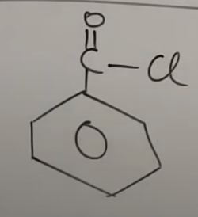

IUPAC Nomenclature : Naming Of Aromatic Compounds - Benzene Rings
(
You Tube Playlist Link
)
ALL TOPICS
Some Basic Principles and Naming Of Alkanes
Complex Substituents and Cycloalkanes
Naming Of Alkenes and Alkynes
Functional Groups with Secondary Suffix
Naming Of Alcohols
Naming Of Aldehydes and Ketones
Naming of Carboxylic Acids and Acid Halides
Naming Of Acid Amides and Esters
Naming of Cyanides, Amines, and Ethers
Naming of Polyfunctional Compounds (More than One Functional Group)
Naming Of Aromatic Compounds - Benzene Rings
Naming Of Bicyclo and Spiro Compounds
Naming Of Aromatic Compounds - Benzene Rings
Introduction to naming of Benzene and Related Compounds
The name "benzene" is so popular that it takes precedence over it's official IUPAC name cyclohex-1,3,5-triene.
The double bonds in benzene are "delocalized" which means they change position. This is known as "resonance"
Due to changing position of the double (pi) bonds, it is represented with a ring in the middle like so :
In case of naming of benzene, commom naming is also important (as they are more in use than their IUPAC counterparts).
Naming of benzene positions with respect to a substituent :
"Ortho" = the position next to the substituent.
"Meta" = next to ortho.
"Para" = opp to the substituent
Using the above rule, the below compound can also be called "o-dimethyl benzene". This is it's common name.
If both common name ("o","m","p") and IUPAC (with numbering) are given in choice, pick the IUPAC one.
Naming of Benzene compounds
Ques 1
bromo benzene
Ques 2
1-bromo-4-nitro benzene
Ques 3
4-bromo-1-chloro-2-nitro benzene
Ques 4 (common name: Toluene)
methyl benzene
Ques 5
ethyl benzene
Ques 6 (common name : o-dimethyl benzene)
1,2-dimethyl benzene
Ques 7 (common name : m-dimethyl benzene)
1,3-dimethyl benzene
Ques 8 (common name : p-dimethyl benzene)
1,4-dimethyl benzene
Ques 9 (introducing functional group)
(common name preferred instead of IUPAC)
Phenol (and NOT benzene-1-ol)
Ques 10
(common name preferred instead of IUPAC)
Benzaldehyde (and NOT benzene-1-al)
Later IUPAC recommendation : benzene carbaldehyde
Ques 11
Common name: methyl phenyl ketone
Another more common : Acetophenone
IUPAC : 1-phenyl ethan-1-one
Ques 12
Common name: benzonitrile
IUPAC : benzene nitrile
Later IUPAC recommendation : Benzene carbonitrile
Ques 13
(common name preferred instead of IUPAC)
Common name: benzonic acid
IUPAC : benzene-1-oic acid
Later IUPAC recommendation : Benzene carboxylic acid
Ques 14
(common name preferred instead of IUPAC)

Common name: benzoyl chloride
Later IUPAC recommendation : Benzene carbonyl chloride
Ques 15
(common name preferred instead of IUPAC)
Common name: benzamide
IUPAC : benzene-1-amide
Later IUPAC recommendation : Benzene carboxamide
Ques 16
(common name preferred instead of IUPAC)
Common name: methyl benzoate
Later IUPAC recommendation : Methyl benzene carboxylate
Ques 17
(common name preferred instead of IUPAC)
Common name: methyl phenyl ether
IUPAC : methoxy benzene
Ques 18
(common name is use : Aniline)
Common name: amino benzene / benzenamine
IUPAC : benzene-1-amine
Ques 19
(Multiple function groups attached to benzene ring)
benzene-1,2-diol
Ques 20
(Multiple function groups attached to benzene ring)
Common : benzene-o-dicarboxylic acid
IUPAC : benzene-1,2-dicarboxylic acid
Ques 21
(Multiple function groups attached to benzene ring)
Common : benzene-m-dicarbaldehyde
IUPAC : benzene-1,3-dicarbaldehyde
Ques 22
(Polyfunction group attached to benzene ring)
3-bromo-5-formyl benzoic acid
Ques 23
(Polyfunction group attached to benzene ring)
5-cyano-2-formyl benzamide
Ques 24
(Polyfunction group attached to benzene ring)
methyl 3-cyano-5-hydroxy benzoate
Ques 25
(Polyfunction group attached to benzene ring)
phenyl ethanoate
Ques 26
(Polyfunction group attached to benzene ring)
3-ethoxy carbonyl-5-formyl benzoic acid
Ques 27
(Polyfunction group attached to benzene ring)
common : o-amino phenol / 2-hydroxy aniline / o-hydroxy aniline
IUPAC : 2-amino phenol
Ques 28
(Polyfunction group attached to benzene ring)
2-bromoformyl-4-ethoxy-6-formyl-5-methoxy- 3-methoxy carbonyl benzoic acid